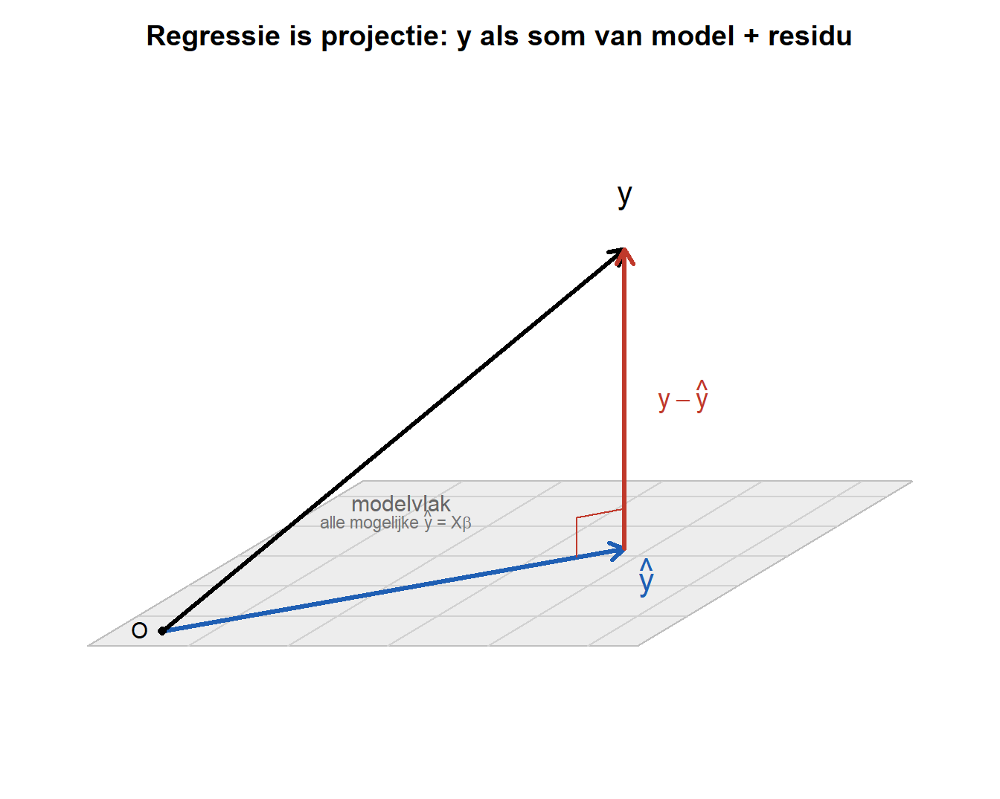

In het practicum bij de Bradford-test gebruikte je de functie lm(abs ~ conc). Die functie deed het werk, maar bleef een black box: je zag de geschatte parameters verschijnen zonder te weten wat er onder de motorkap gebeurde. In dit hoofdstuk openen we die black box.
Je hebt daar al twee stukken gereedschap voor klaarliggen. Ten eerste de taal van datavectoren en de datamatrix: je meetgegevens als geordende rijtjes getallen. Ten tweede de parametervector\(\boldsymbol{\beta} = (a, b)\), die we in het practicum al even aankondigden. In dit hoofdstuk brengen we die twee samen.
Je zag lm() ook terug in de opdracht over logaritmes en allometrische schaling, waar hetzelfde lineaire model op log-log-getransformeerde data werd toegepast. Dezelfde functie, dezelfde wiskunde, telkens een andere biologische context. In dit hoofdstuk gaan we begrijpen waarom die ene functie zo breed inzetbaar is.
De rode draad van dit hoofdstuk is bovendien een oude bekende. In de eerste portfolio-opdracht draaide alles om onzekerheid, en we maten die met entropie. We zullen zien dat regressie in de kern hetzelfde doet: hier om onzekerheid te verkleinen door gebruik te maken van informatie. Waar entropie discreet en in kansen rekent, rekent regressie continu en in variantie war we een continue versie van entropie moeten gebruiken. Het onderliggende idee is hetzelfde.
3.1 Het model in vectorvorm
We vertrekken van het lineaire model uit het practicum:
\[Ab = a + b \cdot Conc\]
Dit geldt idealiter voor elke meting. Maar we hebben niet één meting, we hebben er \(n\). Voor meting \(i\) schrijven we:
\[y_i = a + b \cdot x_i + \varepsilon_i\]
Hier is \(y_i\) de waargenomen uitkomst (bijvoorbeeld de absorbantie), \(x_i\) de predictor (de concentratie), en \(\varepsilon_i\) een residu: het kleine verschil tussen wat het model voorspelt en wat we echt meten. Dat residu is er altijd, omdat de meetpunten nooit precies op één lijn liggen.
Al deze \(n\) vergelijkingen tegelijk kunnen we compact opschrijven met vectoren en een matrix:
De matrix \(\mathbf{X}\) heet de designmatrix. De eerste kolom bestaat volledig uit enen; die hoort bij het intercept \(a\). De tweede kolom is de datavector met predictoren. Het product \(\mathbf{X}\boldsymbol{\beta}\) is opnieuw een vector, met op plek \(i\) precies de voorspelling \(a + b \cdot x_i\).
Een matrix maal een vector, \(\mathbf{X}\boldsymbol{\beta}\), betekent: neem van elke rij van \(\mathbf{X}\) de gewogen som met de gewichten uit \(\boldsymbol{\beta}\). Rij \(i\) is \((1, x_i)\), dus de gewogen som is \(1 \cdot a + x_i \cdot b = a + b\,x_i\). Zo levert één matrix-vector-product in één keer alle \(n\) voorspellingen op.
Vraag 1: Stel dat je drie metingen hebt met concentraties \(x_1 = 2\), \(x_2 = 4\), \(x_3 = 6\). Schrijf de designmatrix \(\mathbf{X}\) volledig uit. Schrijf daarna, met symbolen \(a\) en \(b\), de drie elementen van de voorspellingsvector \(\mathbf{X}\boldsymbol{\beta}\) op.
jouw antwoord:
Vraag 2: Beschrijf de tidy dataset die bij deze data en model hoort. Wat valt op, wat hoeven we niet in de dataset weer te geven? Leg uit.
jouw antwoord:
3.2 Regressie is projectie
Nu komt de kern van dit hoofdstuk, en meteen het lastigste idee. We gaan de regressie meetkundig bekijken. Daarvoor kijken we op een ongewone manier naar de data.
Tot nu toe tekende je een scatterplot: elk punt was één meting. In dat plaatje leven de metingen náást elkaar. Nu doen we iets anders: we vatten de héle uitkomst-datavector \(\mathbf{y}\) op als één punt in een ruimte. Bij drie metingen is \(\mathbf{y} = (y_1, y_2, y_3)\) dus één pijl in een driedimensionale ruimte, vanuit de oorsprong.
De voorspellingen van het model, \(\mathbf{X}\boldsymbol{\beta}\), kunnen niet zomaar overal liggen. Welke waarden \(a\) en \(b\) je ook kiest, het resultaat ligt altijd in een plat vlak door de oorsprong: het modelvlak. Dit vlak bevat álle mogelijke voorspellingen die het model kan maken; een hele hoop één dimensionale lijnen liggen allemaal op een 2 dimensionaal vlak.
Het probleem is nu meetkundig samen te vatten: de waargenomen \(\mathbf{y}\) ligt vrijwel nooit precies in dat vlak. Er is immers ruis. De vraag van regressie wordt daarmee: welk punt in het modelvlak ligt het dichtst bij\(\mathbf{y}\)? Dat dichtstbijzijnde punt noemen we \(\hat{\mathbf{y}}\), de projectie van \(\mathbf{y}\) op het modelvlak. Je kunt het zien als de schaduw die \(\mathbf{y}\) recht op het vlak werpt.
Toon de R-code van deze figuur
# --- 3D -> 2D: een eenvoudige schuine kijk op een 3D-scene ---# --- indrukwekkend, maar gewoon gemaak met LLM's ;-) ---iso <-function(x, y, z) { d <-0.5cbind(x + d * y, z + d * y *0.6)}P <-function(p) iso(p[1], p[2], p[3])arrow3d <-function(p, q, ...) { a <-P(p); b <-P(q)arrows(a[1], a[2], b[1], b[2], length =0.12, ...) }seg3d <-function(p, q, ...) { a <-P(p); b <-P(q)segments(a[1], a[2], b[1], b[2], ...) }lab3d <-function(p, txt, ...) { a <-P(p); text(a[1], a[2], txt, ...) }# --- de scene: oorsprong, projectie in het vlak, residu omhoog ---O <-c(0, 0, 0)yhat <-c(2.6, 2.2, 0) # projectie: ligt IN het modelvlak (z = 0)res <-c(0, 0, 2.4) # residu: loodrecht uit het vlakyobs <- yhat + res # waarneming ypar(mar =c(0.5, 0.5, 2.4, 0.5))box_pts <-rbind(P(c(-0.6,-0.6,0)), P(c(4.2,-0.6,0)), P(c(4.2,4.2,0)),P(c(-0.6,4.2,0)), P(yobs +c(0,0,0.4)))plot(box_pts, type ="n", asp =1, axes =FALSE, xlab ="", ylab ="",main ="Regressie is projectie: y als som van model + residu")# modelvlak (alle mogelijke voorspellingen Xβ)corners <-rbind(P(c(-0.4,-0.4,0)), P(c(4.0,-0.4,0)),P(c(4.0,4.0,0)), P(c(-0.4,4.0,0)))polygon(corners, col ="grey93", border ="grey75")for (t inseq(0.4, 3.6, by =0.8)) {seg3d(c(t,-0.4,0), c(t,4.0,0), col ="grey82")seg3d(c(-0.4,t,0), c(4.0,t,0), col ="grey82")}lab3d(c(-0.3, 3.4, 0), "modelvlak", col ="grey40", cex =0.95, pos =4)lab3d(c(-0.3, 2.9, 0),expression("alle mogelijke "*hat(y) *" = X"* beta),col ="grey45", cex =0.72, pos =4)# de drie vectorenarrow3d(O, yhat, col ="#1f5fb4", lwd =3.2) # ŷ in het vlaklab3d(yhat +c(0.15,0.05,0), expression(hat(y)),col ="#1f5fb4", cex =1.35, pos =1)arrow3d(O, yobs, col ="black", lwd =3.2) # y (waarneming)lab3d(yobs +c(0,0,0.2), expression(y), col ="black", cex =1.35, pos =3)arrow3d(yhat, yobs, col ="#c0392b", lwd =3.2) # residulab3d((yhat+yobs)/2+c(0.15,0,0), expression(y -hat(y)),col ="#c0392b", cex =1.15, pos =4)# rechte-hoek-markering aan de voet van het residuh <-0.32u <- yhat /sqrt(sum(yhat^2))cA <- yhat +c(0,0,h); cB <- yhat -c(u[1],u[2],0)*h*1.1seg3d(cA, cA -c(u[1],u[2],0)*h*1.1, col ="#c0392b", lwd =1.4)seg3d(cB, cB +c(0,0,h), col ="#c0392b", lwd =1.4)op <-P(O); points(op[1], op[2], pch =16, cex =0.8)text(op[1], op[2], "O", pos =2, cex =0.95)

Figure 3.1: De waarneming y ligt buiten het modelvlak. De projectie ŷ is het dichtstbijzijnde punt ín het vlak; het residu y − ŷ verbindt beide en staat loodrecht op het vlak.
In de figuur zie je alle drie de vectoren vanuit de oorsprong \(O\). De blauwe \(\hat{\mathbf{y}}\) ligt in het grijze modelvlak: dit is de beste voorspelling die het model kan maken. De zwarte \(\mathbf{y}\) steekt uit het vlak omhoog: dit is wat je werkelijk hebt gemeten. De rode vector \(\mathbf{y} - \hat{\mathbf{y}}\) verbindt de projectie met de waarneming. Dat is de residuvector (restvector): precies wat het model niet verklaart.
Het kleine hoekje bij de voet van de rode vector geeft aan dat het residu loodrecht op het modelvlak staat. Dat is geen toeval: de kortste afstand van een punt tot een vlak loopt altijd langs de loodlijn. Precies daarom is de projectie de best mogelijke keuze; elke andere keuze in het vlak zou een langer residu geven.
Waaróm dat residu loodrecht staat, en hoe je die loodrechtheid exact berekent met een inproduct van vectoren, komt later dit jaar aan bod in de cursus statistiek. Voor nu is het genoeg om het meetkundig te zien: het rechte-hoekje in de figuur is de belofte van iets dat je straks precies leert uitrekenen. Onthoud het teken; je komt het terug.
Vraag 3: Stel dat je meetpunten toevallig precies op een rechte lijn liggen, zonder enige ruis. Waar ligt de waarneming \(\mathbf{y}\) dan ten opzichte van het modelvlak? Hoe lang is de residuvector \(\mathbf{y} - \hat{\mathbf{y}}\) in dat geval? Beschrijf in woorden.
jouw antwoord:
Vraag 4: Regressie kiest \(\hat{\mathbf{y}}\) als het punt in het modelvlak dat het dichtst bij \(\mathbf{y}\) ligt. Leg uit waarom elk ánder punt in het vlak een langere residuvector zou opleveren. Gebruik daarbij het beeld van de loodlijn.
jouw antwoord:
3.3 Evo-devo: regressie als het verkleinen van onzekerheid
Nu leggen we de brug naar de biologie, en naar de rode draad van onzekerheid.
Bekijk de residuvector nog eens. Hoe korter die vector, hoe dichter de waarnemingen bij de voorspellingen liggen, en hoe beter het model de uitkomst voorspelt. Een korte residuvector betekent: als je de predictor kent, weet je de uitkomst vrijwel zeker. Een lange residuvector betekent: zelfs mét de predictor blijft er veel onzekerheid over.
Dat is precies de gedachte die je kent van de entropie-splitsing uit de eerste opdracht:
Daar zagen we dat conditioneren op informatie, weten wélke soort het is, de onzekerheid over het fenotype verkleint. Regressie doet hetzelfde, maar continu en in termen van variantie in plaats van entropie:
De variantie van \(\mathbf{y}\) zónder de predictor is groot; de overgebleven variantie gegeven de predictor, de spreiding rond de lijn, is kleiner. Die overgebleven spreiding is niets anders dan de lengte van de residuvector. Regressie is dus de continue tegenhanger van de entropie-decompositie: dezelfde beweging van onzekerheid-verkleinen-door-informatie, in een andere wiskundige taal.
Dit is opnieuw een voorbeeld van de terugkerende boodschap: één idee, onzekerheid die afneemt zodra je ergens op conditioneert, duikt op in twee heel verschillende wiskundige vormen. De entropie rekent met kansen en logaritmes; de regressie met vectoren en varianties. De interpretatie verbindt ze.
En hier komt de evo-devo binnen. Canalisatie is het vermogen van de ontwikkeling om, ondanks variatie in genotype of omgeving, steeds hetzelfde fenotype voort te brengen. In de taal van dit hoofdstuk is dat verrassend concreet: een sterk gekanaliseerd kenmerk is een kenmerk met een korte residuvector. Het verwachte fenotype ligt vast, en de individuele afwijkingen daaromheen zijn klein. Een slecht gebufferd, weinig gekanaliseerd kenmerk heeft juist een lange residuvector: veel onvoorspelbare variatie rond het gemiddelde.
Let op één nuance. De residuvector mengt twee bronnen van variatie: echte biologische variatie tussen individuen én meetruis van je instrument. Canalisatie gaat over de eerste. Een korte residuvector door een nauwkeurige spectrofotometer is dus iets anders dan een korte residuvector door sterke ontwikkelingsbuffering, ook al zien ze er in de wiskunde hetzelfde uit.
Vraag 5: Leg in je eigen woorden uit waarom een sterk gekanaliseerd kenmerk hoort bij een korte residuvector. Betrek daarin het begrip voorspelbaarheid: hoe goed kun je het fenotype van een individu voorspellen als het kenmerk sterk gekanaliseerd is?
jouw antwoord:
Vraag 6: In de eerste opdracht was onzekerheid discreet (entropie, in kansen); hier is ze continu (variantie, in een residuvector). Beschrijf in je eigen woorden welk idee in béíde gevallen hetzelfde is. Wat betekent “conditioneren op informatie” telkens?
jouw antwoord:
Vraag 7 (speculatief): Canalisatie zorgt dat veel verschillende genotypen tot hetzelfde fenotype leiden, en maakt soorten daarmee tot scherpe, telbare en herkenbare eenheden. Bedenk een hypothese: hoe zou de mate van canalisatie (de lengte van de residuvector binnen een soort) kunnen samenhangen met hoe goed soorten in de biodiversiteit van elkaar te onderscheiden zijn? Er is hier geen goed of fout antwoord; durf te speculeren.
jouw antwoord:
3.4 Verdieping: Pythagoras en \(R^2\)
Deze sectie is een verdieping. Ze is niet nodig om de rest te begrijpen, maar laat een mooie samenhang zien voor wie verder wil.
Kijk nog een keer naar de figuur. De drie vectoren \(\mathbf{y}\), \(\hat{\mathbf{y}}\) en \(\mathbf{y} - \hat{\mathbf{y}}\) vormen samen een driehoek, en dankzij het rechte-hoekje is dat een rechthoekige driehoek. Op een rechthoekige driehoek geldt de stelling van Pythagoras. Toegepast op de lengtes van deze vectoren levert dat:
De totale variatie in je data valt uiteen in een deel dat het model verklaart en een deel dat overblijft als residu. Dat is dezelfde soort opsplitsing als de entropie-decompositie uit de eerste opdracht, nu meetkundig afgedwongen door Pythagoras. Opnieuw duikt een vertrouwde wiskundige vorm op in een nieuwe context.
Uit deze opsplitsing volgt direct een maat voor hoe goed het model voorspelt, de determinatiecoëfficiënt of multiple R^2:
\(R^2\) is de fractie van de totale onzekerheid over \(\mathbf{y}\) die wegvalt zodra je de predictor kent. Ligt \(R^2\) dicht bij \(1\), dan is de residuvector kort en is het kenmerk goed voorspelbaar, sterk gekanaliseerd, in onze evo-devo-interpretatie. Ligt \(R^2\) dicht bij \(0\), dan voegt de predictor weinig toe.
De koppeling tussen “kleinere variantie” en “kleinere entropie” is exact te maken, maar alleen onder de aanname dat de variatie een normale (Gaussische) verdeling volgt; dan is de entropie een nette functie van de variantie. Voor ons volstaat de parallel: in beide gevallen meet je hoeveel onzekerheid er overblijft. De precieze voorwaarden leer je later dit jaar bij statistiek.
Vraag 8 (verdieping): Leg uit waarom \(R^2\) nooit groter dan \(1\) en nooit kleiner dan \(0\) kan zijn. Gebruik daarbij de Pythagoras-opsplitsing hierboven: wat zou het betekenen voor de lengtes van de vectoren als \(R^2 = 1\), en wat als \(R^2 = 0\)?
jouw antwoord:
3.5 Slotopdracht: jouw eigen synthese
Zoals bij de vorige opdrachten is dit een momentopname van je denken; er is geen goed of fout antwoord, alleen goed of slecht geformuleerd. Je mag je antwoorden later dit jaar vrij herzien.
Vraag 9 — Dezelfde wiskunde, andere betekenis. In dit hoofdstuk kwamen meerdere vertrouwde vormen terug in een nieuwe gedaante: de logaritme-context van allometrie werd een regressie, de entropie-decompositie werd een variantie-decompositie, en Pythagoras bleek varianties te ontleden. Kies er één en beschrijf in je eigen woorden wat er behouden blijft en wat er verandert wanneer de vorm van context wisselt.
jouw antwoord:
Vraag 10 — Terug naar je eigen hypothese. Lees je speculatieve antwoord terug uit de eerste portfolio-opdracht, waar je een hypothese formuleerde over entropie, onzekerheid en canalisatie. Zie je nu, met regressie en de residuvector erbij, een verband dat je toen nog niet kon verwoorden? Herschrijf of breid je hypothese uit.
jouw antwoord:
Bewaar je antwoorden goed. Aan het eind van het jaar, na de cursus statistiek waarin je de loodrechtheid en het inproduct precies leert uitrekenen, kijk je hierop terug en zie je hoe je denken zich heeft ontwikkeld.